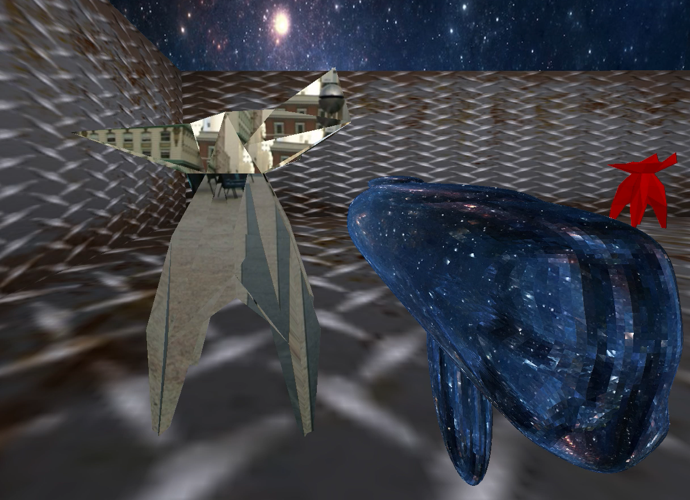
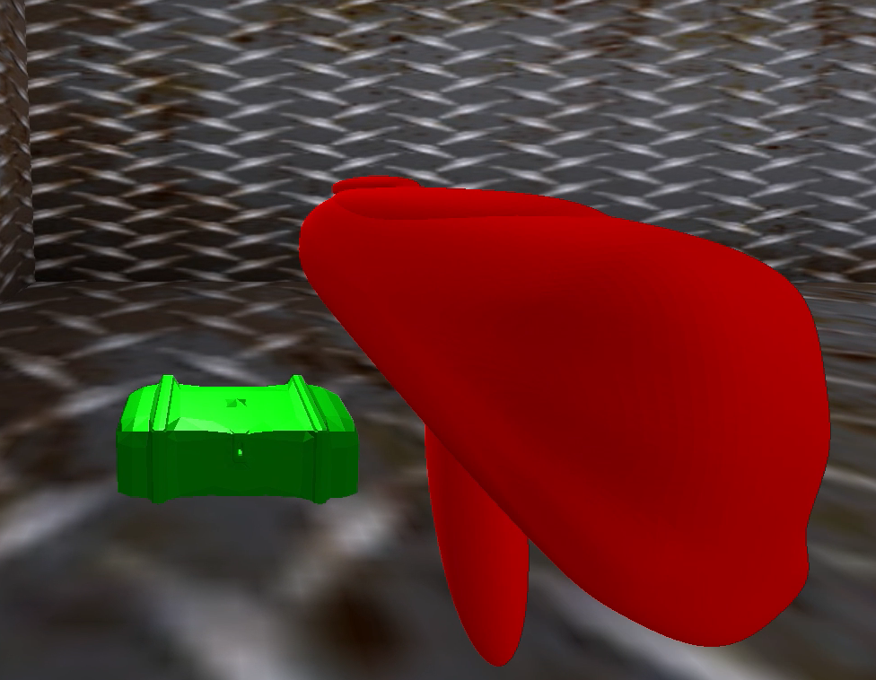
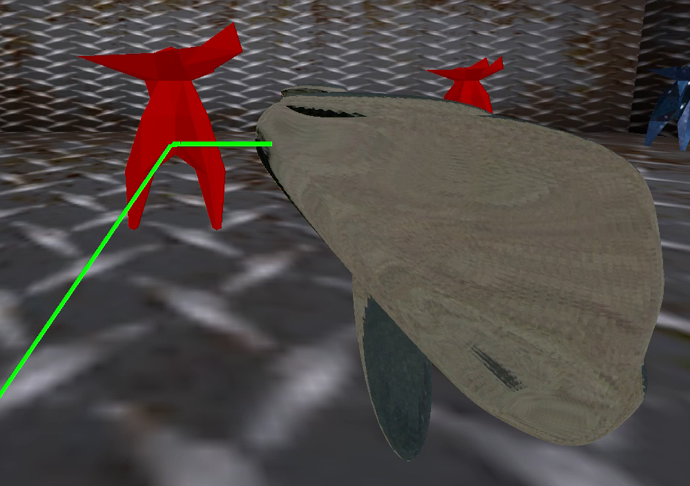
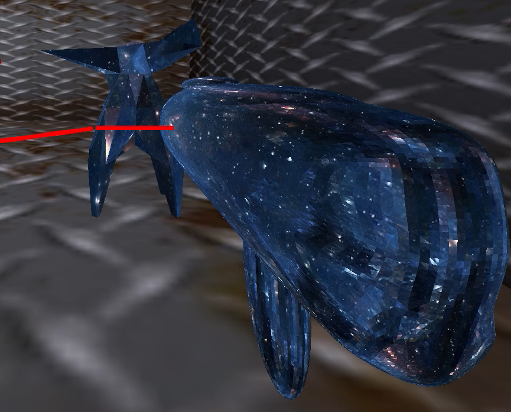

Escape from Planet Eshleman
Marcus Lee, 25812787; Michael Lu, 25464293; Noah Lopez, 25709092
Abstract
"Escape from Planet Eshelman" is a first person shooter game built on THREE.js. The core mechanics of the game incorporate ray-tracing intersection logic and material bidirectional reflectance distribution functions (BRDFs). The player picks different weapons to shoot enemies with different material/BRDF types in order to destroy them. The lasers shot reflect off the enemies according to their material type. Reflected lasers can hit other enemies or you. The goal of the game is to properly destroy all the enemies and pick up the treasure box at the end.
Technical approach
We started our project with a very vague idea to build an "OpenGL/WebGL" game. This game was to be a dungeon style FPS with AI, random level design, and a space shooter finale. However, when we got are first round of feedback we realized we were not incorporating a technical challenge relating to what we learned in class. Furthermore, we didn't want to reinvent several wheels with building an entire rendering engine or whatnot. For example instead using a library like THREE.js we were planning to build an entire game engine from OpenGl. Therefore, we decided on building our game on THREE.js with raytracing as its core gameplay mechanic.
Moving forward with this idea, we initially split the work into three portions: exploring materials/BRDFs, designing character models, and implementing raygun logic. It turns out that THREE.js has a rich library for creating and customizing materials and textures. We modelled BRDFs through their physical appearance and checked for their "material" property solving our first task. Next, THREE.js also has integration with Blender so that we could easily import complex models into a THREE.js scene, solving are second task. Finally, our greatest challenge was determining our raygun logic, since THREE had no built methods for handling raytracing. Initially our raygun logic was very crude and only supported cube intersection. To improve our raygun's functionality we ported raytracing code from project 3-2. Specifically, BSDF sampling for Diffuse, Glass, and Mirror materials; triangle intersections; and recursive ray bouncing. After implementing these modifications, our intersection code was robust and gameplay ready!
We faced numerous issues along the way including raygun tracking, browser discrepancies and of course raygun logic. To implement raygun tracking, we had to update the gun model's position relative to the camera every time the camera moved. This update occurs within the animation loop of THREE. We encountered issues with updating the position of the gun in relation to rendering the entire scene, so for example we had our randomly generated objects stack on top of each other because the update occurred before the render. Once we fixed this ordering, the gun stuck to the camera position and everything loaded normally. As mentioned before, our raygun logic was initially primitive and limited to cube's, we solved this problem by integrating our knowledge from previous projects to make intersections look and feel more realistic. During development, in order to test our code we had to host our own mini servers and play with our game on browser. We had issues where loading our game on Safari vs Chrome had major discrepancies, such as textures not loading properly on one or the other, or lasers being drawn differently. To solve this problem we decided to stay consistent and test on just one browser, and also maintained strict git discipline.
Building this project was certainly a deep and engaging learning experience. One of our greatest challenges and hence most enriching lessons was narrowing down our ideas for the game to the begin with. We had all these cool ideas that we had trouble deciding on, and we spent an extra week finalizing our idea before committing to it. The lesson here is definitely to start early and get feedback early, and just pick an idea to go for.
Furthermore, we really appreciated the effort taken towards developing a game. In particular, getting convincing first-person controls to work was difficult, and creating convincing 3D environments and textures was also a pain. However, we also learned to be efficient, not reinvent the wheel, and now we all have greater depth in the general game development process, building a project in JavaScript and working with the THREE.js library. Taking this project further or building another one in the near future will certainly be more straightforward, and a lot more fun.
Speaking of which, and lastly, it really made all the difference to work on something we had fun with. We all went into this project with the mindset that we wanted to enjoy it and align it with our passions, and having that higher level motivation really pushed us to build something that beyond our expectations. Matching our passions with our work is truly a rare experience which we will all cherish.
Results
|

|

|
|

|

|
References
Texture reflection
https://threejs.org/examples/?q=cubemap#webgl_materials_cubemap_balls_reflection
https://github.com/mrdoob/three.js/blob/master/examples/webgl_materials_cubemap_balls_reflection.html
Texture refraction
https://threejs.org/examples/?q=cubemap#webgl_materials_cubemap_balls_refraction
https://github.com/mrdoob/three.js/blob/master/examples/webgl_materials_cubemap_balls_refraction.html
Project 3-2 (UniformHemisphereSampler3D::get_sample() from sampler.cpp)
Miscellaneous
https://www.youtube.com/watch?v=YKzyhcyAijo&t=19s
http://www.humus.name/index.php?page=Cubemap&item=UnionSquare
Contributions from each team member
Marcus
Materials application (also building on top of Michael's model work)
Textures application
BRDF sampler code (in conjunction with Noah)
Final presentation slides
Portions of each writeup
Concept drawings
Debugging bad render scenes (in conjunction with Noah)
Noah
Arena
Level Randomization
Timer end game logic (With Michael)
Weapon Switch button
Ray gun following camera/ Moving rays to cast from gun
Initial intersection code for milestone
Diffuse BRDF sampler code (with Marcus)
Concept drawings
Contributed to write ups
Constructed html pages for proposal/milestone submissions
Edited videos
Controls (with Michael)
Michael
3D Models in Blender
ColladaRaycaster class
Recursive raytracing intersection code
Glass BRDF sampler code
Controls (with Noah)